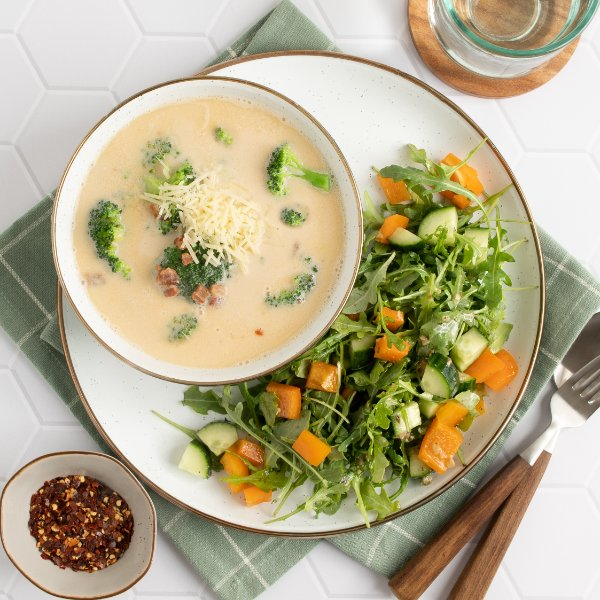

Cheesy Broccoli-Bacon Soup with Bell Pepper, Cucumber & Arugula Salad

Nutrition (per serving)
616.8 kcalCalories
25.7 gProtein
24.1 gCarbs
48.8 gFat
Full nutrition table
| Calories | 616.8 kcal |
| Total fat | 48.8 g |
| Saturated fat | 21.8 g |
| Trans fat | 0.1 g |
| Cholesterol | 99.2 mg |
| Sodium | 1519.6 mg |
| Carbohydrates | 24.1 g |
| Fiber | 5.3 g |
| Sugars | 11.1 g |
| Protein | 25.7 g |
| Potassium | 1166.2 mg |
| Calcium | 401.2 mg |
| Iron | 2.9 mg |
| Vitamin A | 1205.2 IU |
| Vitamin C | 230.7 mg |
| Vitamin D | 9.6 IU |
Cookware
Ingredients
- 1 (16 oz) jarAlfredo sauce
- 1 (5 oz) pkgbaby arugula
- 8 slicesbacon
- 1 (18 oz) bagbroccoli florets
- 32 fl ozchicken or vegetable broth
- 1English cucumber
- ¼ cupItalian salad dressing
- 2orange bell peppers
- ½ cupParmesan cheese, shredded
- black pepper
- crushed red pepper
- salt
Steps
- Preheat a large pot over medium heat.
- While the pot heats up, small dice bacon.8 slices bacon
- Once the pot is hot, add bacon and cook, stirring occasionally, until golden brown and crispy, 4-5 minutes.
- Meanwhile, wash and dry the fresh produce.2 orange bell peppers
1 English cucumber
1 (5 oz) pkg baby arugula - When the bacon is done, add broth, Alfredo sauce, broccoli, and spices to the pot. Stir to combine the soup and bring to a boil. Once boiling, reduce heat to low and simmer until broccoli is tender, about 5 minutes. Remove from heat.32 fl oz (4 cups) chicken or vegetable broth
1 (16 oz) jar Alfredo sauce
1 (18 oz) bag broccoli florets
½ tsp salt
¼ tsp black pepper
¼ tsp crushed red pepper - While the soup is cooking, using a clean cutting board, trim, seed, and medium dice bell peppers. Place in a medium bowl.
- Trim and quarter cucumber lengthwise, then cut crosswise into bite-sized pieces. Add to the bowl with the bell pepper.
- Add arugula and dressing to the bowl, then toss to combine the salad.¼ cup Italian salad dressing
- Divide soup between bowls and top with cheese; serve with salad on the side. Enjoy!½ cup Parmesan cheese, shredded